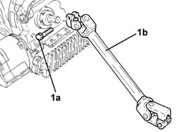

4110A46 INTERMEDIATE SHAFT CONNECTED TO STEERING BOX - R.R.
- Path
- Procedures > 41 STEERING > 4110 STEERING CONTROL AND LINKAGE > 4110A steering control > 4110A46 INTERMEDIATE SHAFT CONNECTED TO STEERING BOX - R.R.
- Kind
- repair procedure (removal / refitting; the operation number is the code)
- Applies to
- all engines; all production periods
- Interactive page
- https://sloeber94.github.io/elrnDB-fPnd/en/#/2752781
Applies to: all engines; all production periods
 Removing
Removing
 Refitting
RefittingDisconnect the battery negative terminal.
4110A10 steering wheel - r+r for replacement or checks
7040A26 steering column trim - r+r
5550A10 stalk unit assembly - r+r
4110D20 steering electrical control device - r r .
1. Undo the bolt (1a) and remove the intermediate shaft connected to the steering box (1b).

Applies to: all engines; all production periods
Refitting
RemovingPlace the intermediate shaft connected to the steering box and secure it by tightening the bolt to the recommended torque.
 | Fastening | Component | Ø | Value (daNm) |
|---|---|---|---|---|
- | Bolt | INTERMEDIATE SHAFT CONNECTED TO STEERING BOX. | - | 2.8 |
4110D20 steering electrical control device - r r .
5550A10 stalk unit assembly - r+r
7040A26 steering column trim - r+r
4110A10 steering wheel - r+r for replacement or checks
Connect the battery terminals.
Check the operation of the Air Bag system using the Examiner or other diagnostic equipment.
Connect the battery negative terminal.